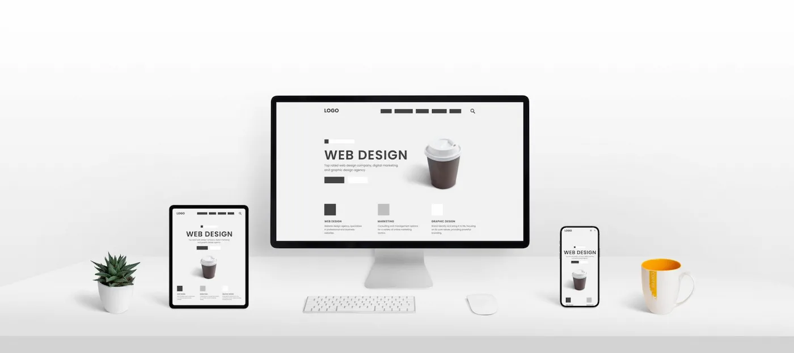
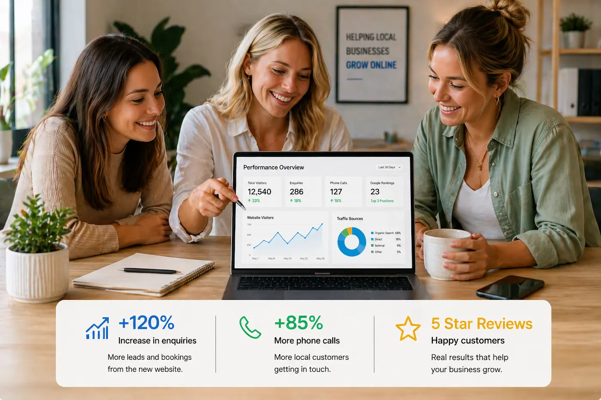
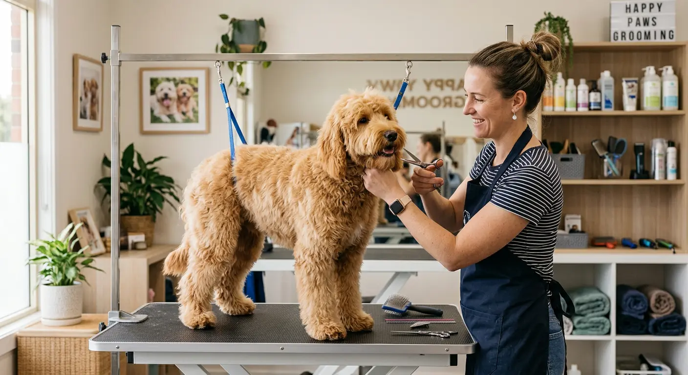
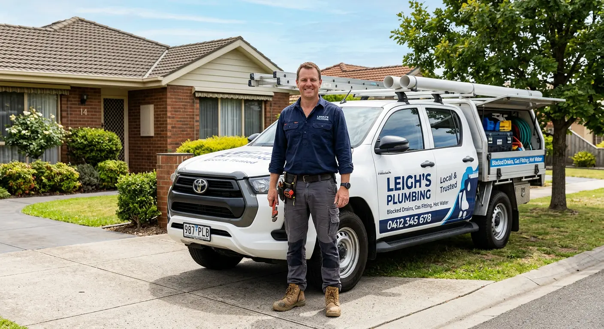
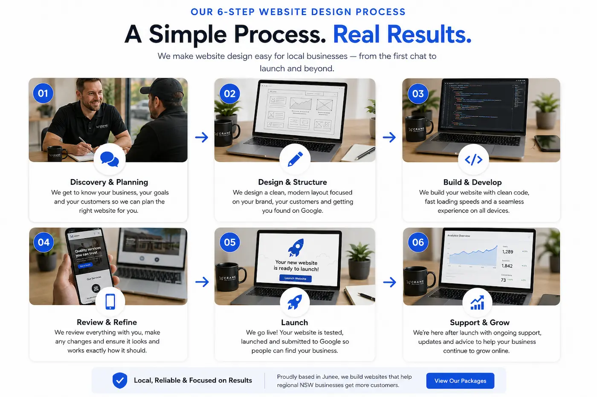
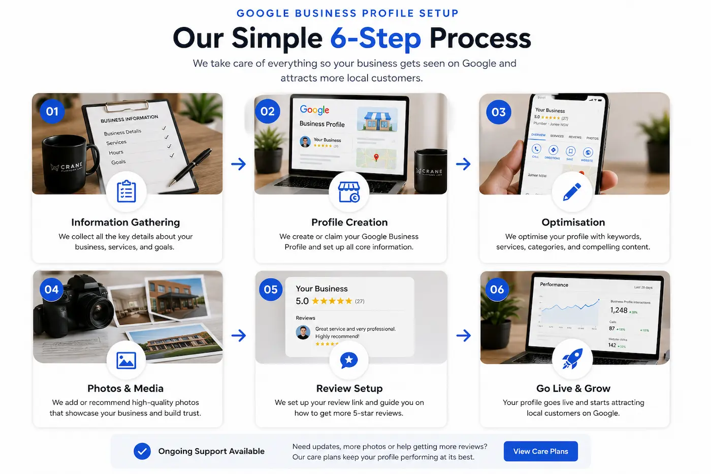
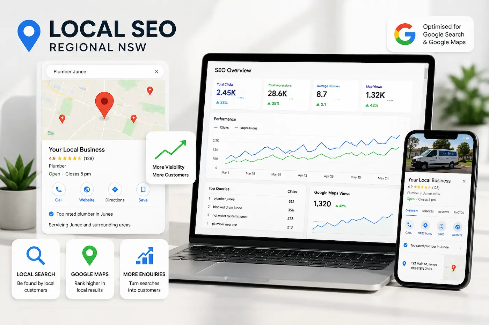

Built for Google
SEO-focused website design helps local businesses improve Google rankings, Google Maps visibility and local search performance.
WEBSITES THAT BRING YOU CUSTOMERS
Website design for businesses in Junee, Wagga Wagga, Albury and regional NSW — built to help you get found on Google, improve local visibility and turn visitors into real enquiries.
We work with tradies, cafés and service businesses across regional NSW, building fast, mobile-friendly websites designed to generate enquiries and improve Google rankings.
Serving Junee, Wagga Wagga, Albury, Griffith, Temora and regional NSW

REAL RESULTS
Every website is designed to improve Google visibility, strengthen customer trust and help regional NSW businesses generate more enquiries online.
SEO-focused website design helps local businesses improve Google rankings, Google Maps visibility and local search performance.
Websites are fully responsive and optimised for mobile devices, where most local business searches now happen.
Lightweight websites load quickly, improve user experience and support better SEO and conversion performance.

WHO WE WORK WITH
We build fast, mobile-friendly and SEO-focused websites for small businesses across regional NSW — helping local businesses improve Google visibility, attract more customers and generate enquiries online.
Website design for builders, electricians, plumbers and regional NSW trades wanting more enquiries from Google.
SEO-friendly websites for salons, hairdressers, barbers and personal care businesses across regional NSW.
Professional websites for coaches, trainers and service-based businesses wanting stronger online visibility.
We provide website design and local SEO services for businesses across regional NSW , including Wagga Wagga , Albury , Griffith , Temora , and Cootamundra .
Whether you're a plumber, electrician, builder, café owner, barber, dog groomer or service-based business , we build websites designed to improve Google rankings, generate enquiries and increase customer trust.


AREAS WE SERVICE
We work with small businesses across regional NSW, building fast, SEO-focused websites designed to improve Google visibility, strengthen customer trust and generate more enquiries online.
THE PROBLEM
Every day, people search Google for local services across regional NSW. Without a professional website or local SEO foundations, your business may not appear when customers are ready to enquire.
Without a website or local SEO, customers may struggle to find your business in Google Search or Google Maps results.
Relying only on word of mouth can make customer enquiries inconsistent and difficult to scale over time.
Businesses with strong websites and local SEO are often capturing the enquiries your business could be receiving.
For small businesses across regional NSW , a professional website is no longer optional — it helps customers find your business, trust your services and contact you with confidence.
THE SOLUTION
We build simple, high-performing websites designed to show up on Google, build trust quickly, and turn visitors into real enquiries.
Structured to appear when local customers search for your services.
Clear layout so customers instantly understand what you do and how to contact you.
Simple calls to action that lead to real calls, bookings, and jobs.
Built for small businesses across regional NSW — simple, fast, and designed to bring in real customers.


HOW WE WORK
We keep everything straightforward, practical and focused on helping your business appear professionally online, improve visibility on Google and generate more enquiries.
We learn about your business, customers and goals before planning the structure and strategy of your website or Google Business Profile.
Everything is built to look professional, load fast, work properly on mobile devices and improve your visibility on Google.
Once live, your business is positioned to start attracting more enquiries, while ongoing support options help keep everything running smoothly.
Based in Junee, Crane Platform Labs supports businesses across Wagga Wagga, Albury, Cootamundra and regional NSW with practical website design and Google visibility solutions.
PRICING
High-quality websites for regional NSW businesses. No ongoing fees, no templates — just clean, custom builds designed to perform.
STARTER
Perfect for new or small businesses
GROWTH
Introductory pricing available
For businesses that want enquiries
PREMIUM
For serious businesses ready to grow
Ready to get started? Get a quote or call 0448 244 223
No ongoing fees • Custom-built websites • You own everything
COMMON QUESTIONS
Learn how professional websites, Google Maps visibility and local SEO help regional NSW businesses generate more customer enquiries.
Our FAQ page answers common questions about website pricing, Google Business Profiles, local SEO, mobile-friendly website design and improving visibility on Google Search and Google Maps.
Whether you are a tradie, café, mechanic, builder or local service business, strong website structure and local SEO foundations can help customers find your business online.
